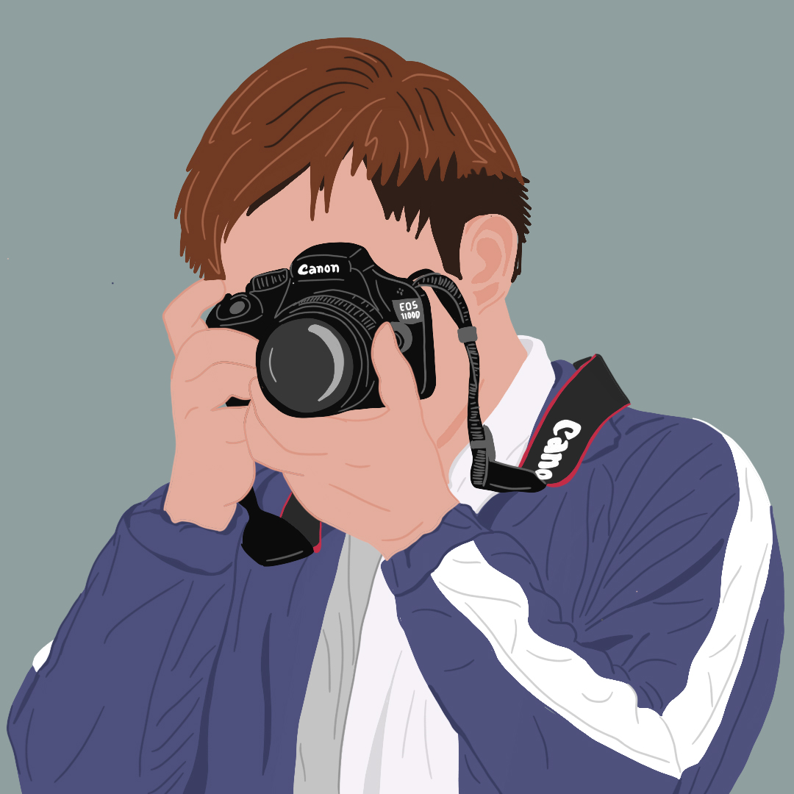
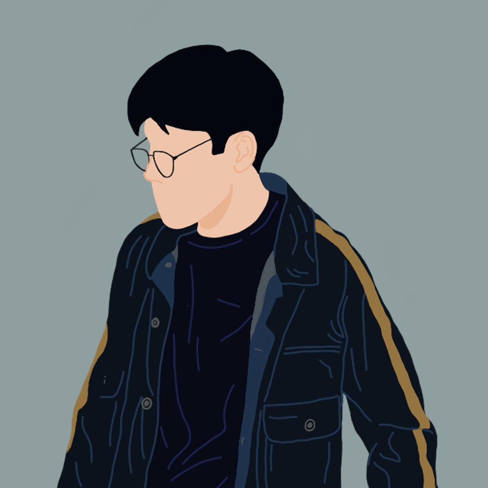
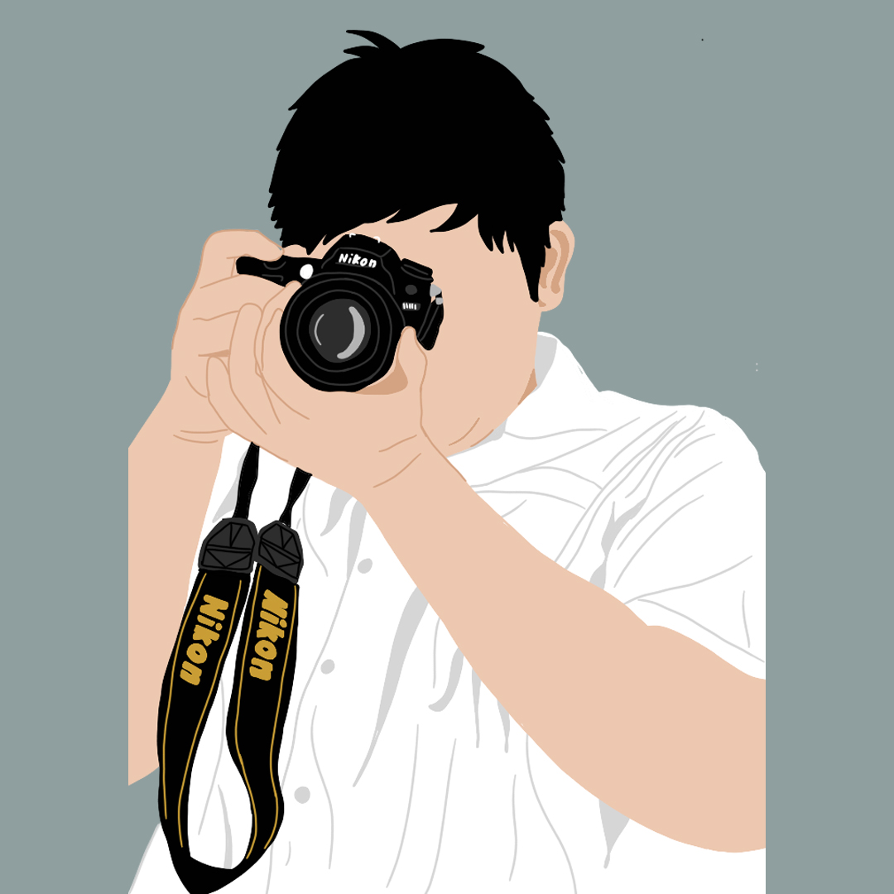
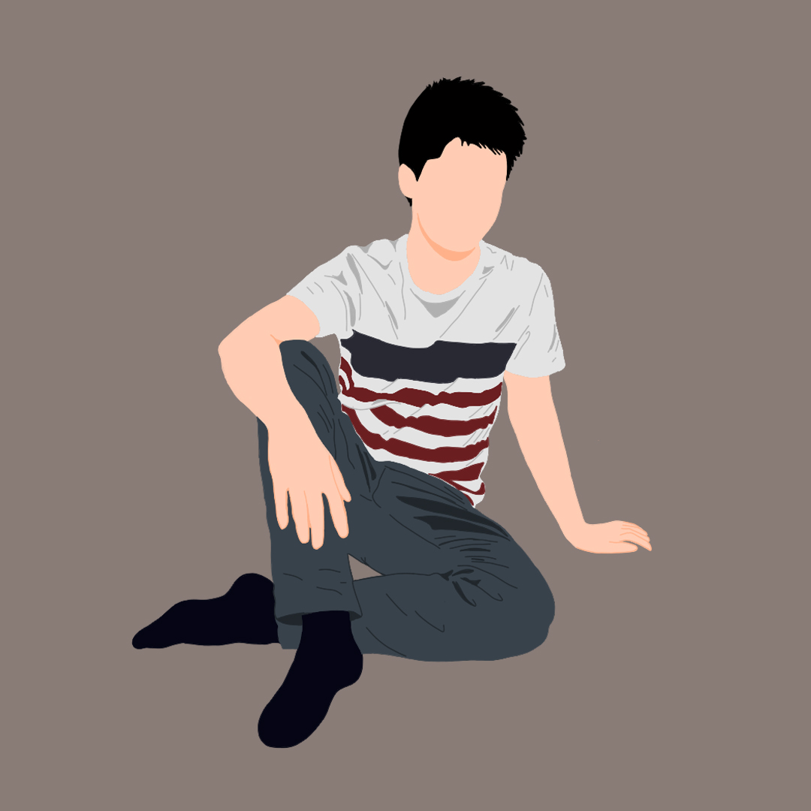
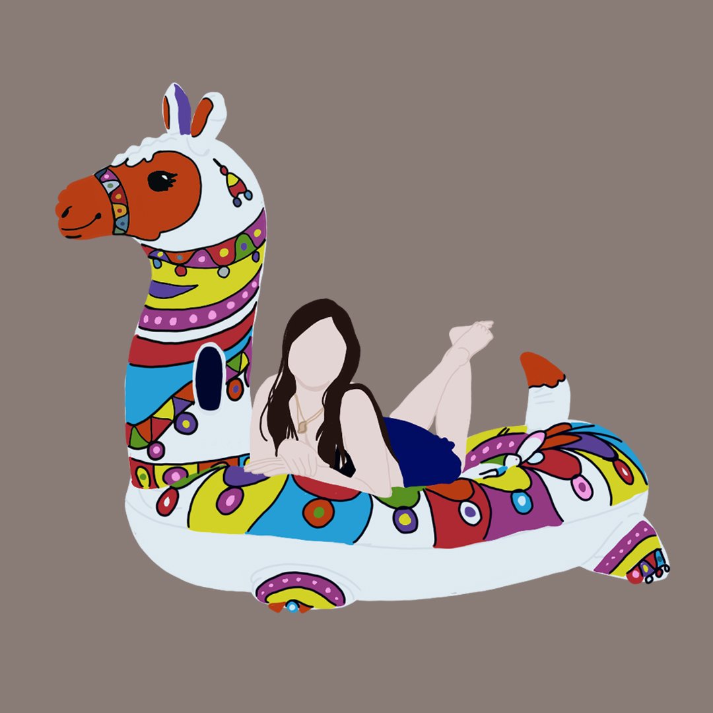
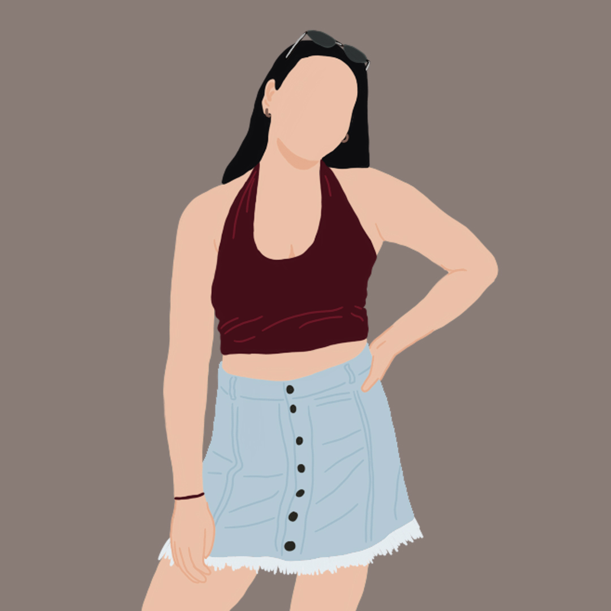

Custom portrait illustrations of individuals, from seated portraits to playful pool-float scenes.
This set of six vector portraits turns individual reference photos into stylized character illustrations — clean linework, flat color fills, and a bit of personality in each pose, from a photographer cradling a camera to a friend floating on a pool inflatable.
Each piece is built from a personal photo, keeping the subject's likeness and signature details (cameras, outfits, hairstyles) recognizable while translating them into a graphic, printable illustration.
All 6 pieces from this collection.





